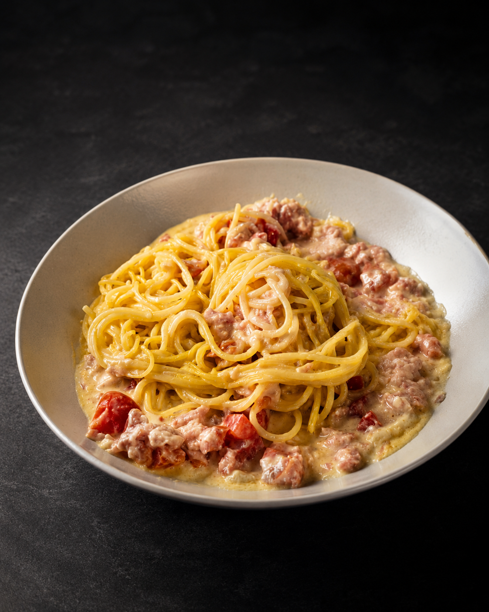

Pâtes crémeuses au thon et skyr

Ingrédients
- 90g de pâtes
- 50g de skyr
- 20g de parmesan
- 1 œuf
- 93g de thon
- 1 tomate
Préparation
- Cuire les 90g de pâtes dans l'eau bouillante selon le temps indiqué sur le paquet.
- Dans un bol, mélanger le skyr, le parmesan, l'œuf, le thon et la tomate coupée en dés.
- Réchauffer la sauce quelques secondes au micro-ondes avant de la verser dans les pâtes.
- Mélanger le tout pour bien enrober les pâtes.
- Servir immédiatement.
Valeurs nutritionnelles (approx.)
Par portion : 645 kcal • 55 g protéines • 16 g lipides • 70 g glucides • 5 g fibres